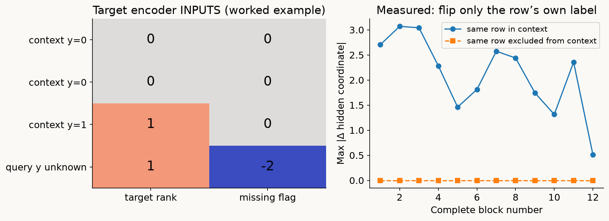
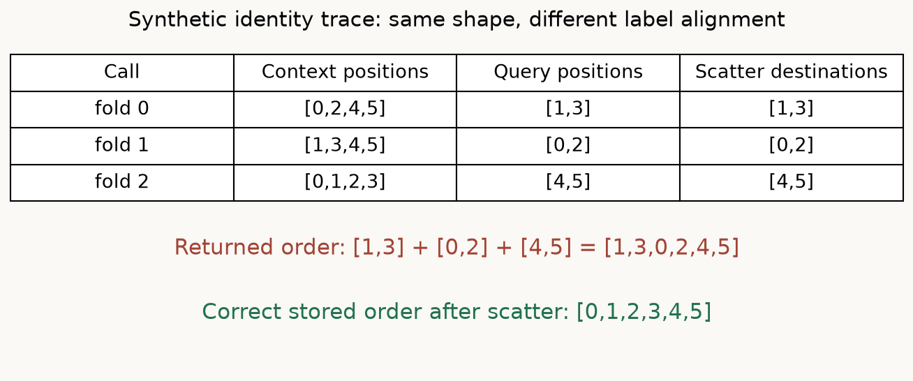
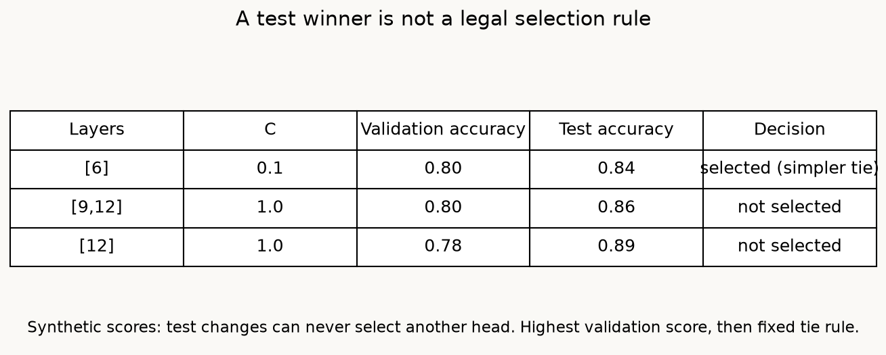
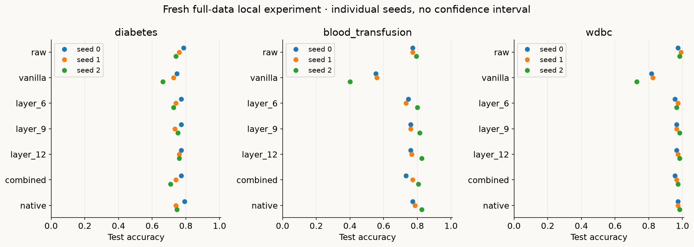
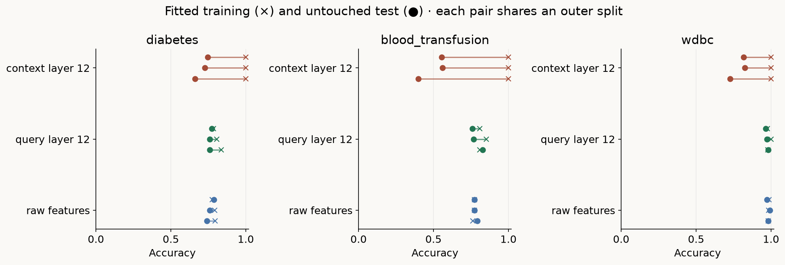

Year 2 · Quarter 3 · Lesson 065
Extract query representations without their own labels
Retrieve before reading
The argument of this lesson
A representation inherits the information used to produce it
The v2 forward pass ends in a query target state before the class decoder. That state can be reused as a feature vector, but its meaning depends on context and role. This lesson connects hidden-state extraction to out-of-fold learning: a representation that already received its own label is not an honest input for evaluating a new probe.
A representation is a computation with an information boundary¶
In plain terms. A model's embedding of a row is only as trustworthy as the information that went into it. This lesson teaches you to build embeddings a real deployment could actually reproduce — ones that never peek at the very label you are trying to predict.
Your outcome. By the end you will turn a frozen TabPFN v2 into a useful feature extractor without giving a training row its own answer. You will implement four steps: ten-fold extraction, restoring row identities, concatenating selected layer states, and training a validation-selected linear head. The backbone is the full historical model from Lesson 064. That backbone has 12 distinct layers, 192 hidden coordinates, six attention heads, and every released parameter loaded. The four new tasks run that real model on a complete dataset.
Retrieve first, without scrolling. What is a query allowed to attend to in v2? What does "frozen" describe — weights, inputs, or both? Why can choosing a hyperparameter on test data invalidate a test score even when no gradient ever touches that data? Try answering before reading further.
Two terms, defined once¶
A representation (also called an embedding) is a vector computed for a row. A linear probe is a linear classifier trained on that vector to measure how accessible the target is to a simple decision rule. Neither the vector's dimensionality nor a clean scatter plot tells us whether the vector is legitimate input at deployment. To judge that, we must know which features, labels, context rows, preprocessing statistics, and fitted parameters produced it.
Why this matters for the relational mission. Suppose a customer representation aggregates related transactions. A transaction outcome that became known only after the prediction time can leak into that representation, even if the final classifier uses a clean temporal split. TabPFN gives us a compact, runnable version of the same audit. Label information can enter a forward pass through the context, without fitting any weights on the evaluated row.
Read the paper as a mechanism, then inspect the release¶
The primary reading is Ye, Liu and Chao, A Closer Look at TabPFN v2, version 1, §6. Read all three subsections, Figure 5, Table 2 and Appendix C Table 10 together.
What the paper's procedure does, step by step. It extracts held-out training folds as queries. It uses ten folds for its visual experiment. It compares layers 6, 9 and 12. It evaluates validation-selected concatenations of up to three of the 12 layers, over 29 classification datasets. Its probe is logistic regression. The broader evaluation setup in §4.1 uses 64/16/20 train/validation/test partitions and 15 seeds.
What the paper's claim is — and is not. The qualitative observation is that role-correct representations can make a simple head competitive with the native predictor. That is a statement about an extraction-and-evaluation procedure. It is not a statement about intrinsic layer quality.
Scope check. Our three-dataset, three-seed numeric experiment is a mechanism study, not that benchmark. The paper's observation does not establish that every layer is linearly separable or that the coordinates have causal meaning. Figure 5's two-dimensional displays cannot substitute for the held-out linear-head measurements. Table 10 also includes cases where selecting a combination does not improve test accuracy. The frozen paper-table audit counts 16 combined wins, 4 ties and 9 losses against native v2. For pc3, combined accuracy is 88.82% versus native 89.46%, although layer 6 scores 90.10%; validation selection need not pick the test winner. Published Table 2 average ranks and ranks reconstructed from rounded Table 10 values are different summaries; the audit retains both without calling rounded-score differences a paper error.
One API detail that is easy to miss¶
The historical 2.0.9 release makes a subtle point concrete. get_embeddings(X, data_source='train') selects context states. The argument X still supplies the query rows for that model call. Changing the string to test selects query states instead.
Scope check. That call does not automatically cross-fit the training table. The release's
model/transformer.pytakes the final token on the group axis;utils.py::_get_embeddingschooses the context or query output. The lab compares its full layer stack and final extraction with that API on the same fixture.
Why context and query states answer different questions¶
A frozen encoder is still a conditional function of its supplied data. Context states can contain their labels; query states are produced without that direct target input. Freezing weights therefore does not remove the need to audit extraction roles.
The symbols, once. Let C be the number of labeled context rows, Q the number of query rows, G the number of two-feature groups, and D=192 the hidden width. After layer ℓ, the model state is H^(ℓ) with shape B×(C+Q)×(G+1)×D. B is the number of tables processed together; our experiment uses B=1. The last of the G+1 tokens is the target token.
The query embedding we want. It is a single slice:
Z_query^(ℓ) = H^(ℓ)[:, C:, -1, :].
Reading that slice one axis at a time. C: selects the receiver rows whose targets were unavailable. -1 selects the target token within each such row. Taking the last row would return one query, not one representation per query. Averaging over feature groups would produce a different representation from the one inspected in the paper and release. Capturing the block output includes its final residual and normalization; capturing a sublayer's input is a different layer convention.
Where a query's target token comes from. A context target token starts from an observed label. A query target token starts from the context-mean-imputed label, converted to a rank, together with the missingness flag −2. The dummy representation is not an all-zero vector.
Worked example. For binary context labels [0,0,1], the filled query value is 1/3. The historical rank encoder counts the distinct context labels below it, producing rank 1. The flag still distinguishes it from an observed class-1 target. These target inputs are linearly encoded before the attention stack.
Why this is the whole point. Consider two identical feature rows assigned opposite labels. Their context target inputs differ immediately. A head may learn to read that difference after the transformer, even though a new query with identical features has no corresponding observed label channel. A perfect training plot can therefore be a symptom of information-role mismatch. Scaling or rotating those coordinates cannot restore an unavailable deployment input.

Holding the right things fixed¶
The counterfactual must hold the relevant operator fixed. In the lab we flip row 0's target while retaining the same features, row identities, fold assignment, context membership, group-identity seed, preprocessing recipe and query batch. When row 0 is excluded from context, its representation is exactly unchanged, because the changed label never enters the model call. When it is a context row, its hidden state changes.
Scope check. Neither test recomputes stratified folds after changing the label; doing so would change context membership and answer another question. Lesson 064 adds an important boundary: masked attention alone does not guarantee complete-wrapper query independence. The historical uncached encoder counts varying channels across all supplied rows. A changed query batch can alter that preprocessing quantity in certain partly missing constant-feature cases. We therefore keep the query batch fixed for label interventions and record batches in the experiment. Own-label exclusion and query-batch independence are separate properties.
Ten folds, one vector per original row¶
To use query-role vectors for supervised training, each row must temporarily leave the labeled context. Fold extraction implements that requirement and scatters one vector back to each original row ID, connecting the encoder to the later probe dataset.
In plain terms. To give every training row a representation that never saw its own label, we hide each row from itself in turn — the same trick as cross-validation, but used here to extract features rather than to score a model.
The setup. Let T be the outer training row IDs. Partition them into K=10 folds F₀,…,F₉. For each fold k, the context Sₖ=T∖Fₖ supplies features and known labels. Rows in Fₖ supply query features only. For row i in Fₖ we compute zᵢ^(ℓ)=gθ^(ℓ)(xᵢ; Sₖ). The semicolon emphasizes that labeled context is an input. Frozen θ does not remove that conditioning.
What each forward produces. Each forward yields approximately one tenth of the training representations, at every layer. An empty allocation of shape |T|×12×192 receives those representations at the original training positions. This is a scatter operation: destinations are explicit indices.
Worked example — why order matters. Concatenating fold outputs changes row order. For positions [0,1,2,3,4,5] with fold IDs [1,0,1,0,2,2], fold traversal returns positions [1,3], then [0,2], then [4,5]. Concatenation would attach the second row's vector to the first row's label. The shape would still look correct.

What the CHECK actually verifies. The CHECK uses identity-coded vectors rather than only shape assertions. Each vector carries its query position, so the restored first coordinate must read [0,1,2,3,4,5]. It also checks that no query ID occurs in its own context, that each row is written once, and that layer and width dimensions agree across folds. These are independent obligations: preserving shape does not imply preserving identity, and preserving identity does not imply excluding the label.
The cost trade. Ten folds trade computation for context coverage. Each training representation sees roughly 90% of T as support, and the backbone runs ten times. Leave-one-out would retain |T|−1 context rows but require |T| forwards. This lab captures all 12 layer states during each forward with hooks, so evaluating another layer does not require another transformer pass. Keeping all states uses memory proportional to rows×12×192, while computing them still incurs the full attention cost.
Model architecture: frozen encoder, fitted probe, explicit evaluation context¶
See the whole solution
Query embeddings: freeze the encoder, learn a new readout
Trace before reading: Why must a training row be extracted as a query rather than as labeled context?
Read every component and connection as text
- Hold fold f in query role: other folds provide context labels; f supplies features only. Connects to Frozen v2 encoder.
- All training rows as context: validation or test rows are queries; their labels never enter encoder. Connects to Same frozen v2 encoder.
- Frozen v2 encoder: 12 feature / row blocks; read final query target states: 192. Connects to Scatter embeddings into row order.
- Same frozen v2 encoder: same 192-wide readout; different context size/composition. Connects to Fit / select linear probe.
- Scatter embeddings into row order: N × 192; attach training y; no self-target in extraction. Connects to Fit / select linear probe.
- Fit / select linear probe: fit on training vectors; validation selects; freeze probe; test once.
↔ On narrow screens, scroll horizontally to see all branches. The text route above reflows to your screen.
Pictured scope. Lesson’s ten-fold query-role training extraction and full-training evaluation context. Frozen historical TabPFN v2; preprocessing/representation mismatch is measured, not assumed away.
{kind=link}
The runnable path, in order. The diagram follows the actual runnable path. Numeric inputs first lose columns constant within the particular context. The model pairs the remaining features, computes context-based replacement and sample normalization, adds group identities, appends the target token, and runs all 12 pretrained blocks.
Inside one block. Feature attention mixes tokens inside a row. Row attention receives only labeled context senders. The feed-forward map acts on each token. Context receivers use all six key/value heads. Query receivers share the first context key/value head across six separate query heads. The model is unchanged from Lesson 064.
Scope check. The released group identity is added after the value encoder; the schematic multiplication in Ye §5 Eq. 2 is not its exact grouped-feature forward. A zero-normalized-value source fixture makes the difference observable before the first block. This lesson uses the checked release operation.
Two branches share the backbone. The extraction branch takes the target state after each complete block, before the native prediction head. The native branch takes the final query target state through the released 192→768→10 head, keeps the two active classes, divides logits by temperature 0.9, and applies softmax. These branches share the checkpoint and outer rows; the extracted-feature branch additionally learns a head from the outer training data.
The evaluation-context policy. At validation and test, this local protocol uses all outer training rows as labeled context, with separate fixed validation and test query batches.
Scope check. The paper's §6 does not fully specify that policy or an evaluation-context averaging rule. Full training context is an explicit local choice. It preserves query role, but support coverage changes from about 90% for head-training vectors to 100% for evaluation vectors. Query-role alignment does not guarantee identical representation distributions. Our historical experiment remains in
_verify_l065_results.json: it used three folds, only final-layer states, and averaged evaluation embeddings over fold contexts. Those numbers belong to that older operator. The new run has ten folds, all-layer extraction, and the declared full-context evaluation policy. Averaging embeddings would also differ from averaging head probabilities: a linear logit commutes with averaging, but a sigmoid or softmax does not.
Derive what the linear head learns¶
With valid vectors in hand, the new head becomes an ordinary supervised learner. Its fitted coefficients can improve the readout without changing the pretrained representation. Keep the encoder context policy separate from the head’s optimization.
Concatenation, not averaging. For selected one-based layers A=(a₁,…,aᵣ), with 1≤r≤3, concatenate their vectors in that order: zᵢ=[zᵢ^(a₁);…;zᵢ^(aᵣ)]. Its width is 192r. Concatenation retains separate coordinates; averaging would compress them into 192 coordinates and prevent the head from independently weighting layer-specific signals. The TODO validates distinct available layers and preserves the requested order.
Standardize on head-training rows only. Fit a separate mean μⱼ and scale sⱼ for each coordinate on head-training representations only. Standardization gives uᵢⱼ=(zᵢⱼ−μⱼ)/sⱼ. The same μ and s transform validation and test vectors. Without this boundary, evaluation rows would participate in a fitted transformation. Without scaling, the L2 penalty could treat a large-unit coordinate differently from an equivalent rescaled one.
The head itself. For our binary datasets, the head computes aᵢ=wᵀuᵢ+b and pᵢ=1/(1+exp(−aᵢ)). The negative log likelihood is −yᵢ log pᵢ−(1−yᵢ)log(1−pᵢ). The solver balances summed training loss against an L2 coefficient penalty; a larger C weakens regularization. The provided fit_head visibly fits the scaler and sklearn's liblinear logistic solver. This is a permitted peripheral optimizer, not a hidden replacement for extraction or the model. Liblinear's synthetic intercept is also regularized with its default intercept scaling. The training routine checks that the iteration limit was not reached.
Scope check. The head's fitted training accuracy is not an unbiased estimate of its future accuracy. Its targets have now been used to optimize w and b, even though they were excluded from their own representation construction. Cross-fitting repairs one information route; it does not turn an in-sample score into a test score.
Selection spends validation information¶
Choosing a probe or regularization strength adapts to validation. That familiar selection boundary applies even though the encoder is frozen. Evaluate the chosen head once, then diagnose whether extraction-context mismatch contributed to its result.
Counting the candidates. There are 12 single layers, 66 pairs and 220 triples: 298 layer subsets. This local completion of the paper's unspecified search details enumerates all of them, with C∈{0.1,1,10}, for 894 candidate fits. Each candidate gets only training representations/targets and validation representations/targets.
The selection rule, fixed in advance. We choose the highest validation accuracy. Exact ties prefer fewer layers, then smaller C, then lexicographic layer order. The rule is fixed before any test probabilities are scored.

The comparison arms. The selected head is refitted deterministically on the same outer training representations, using the chosen layers and C. Validation rows are not promoted into its training set. The native baseline has no local head search. Layers 6, 9 and 12 each get the same three-value C grid. The vanilla diagnostic fits a head on labeled-context layer-12 states and applies it to query states. A raw-feature head uses train-fitted imputation and scaling plus the same C grid. This reveals whether the extracted representation offers anything beyond a simple head on the original table under these choices.
Scope check. More search does not guarantee better test accuracy. If two candidates' validation accuracies differ by one row, the selected winner can reverse on the untouched test set. The widget illustrates that selection logic on a synthetic table, not on the measured datasets. It never lets the test column choose the winner. The resulting local combined head has more selection opportunities than each fixed layer, so a comparison includes both representation choice and search capacity.
Predict before viewing the measurements¶
Commit three predictions first. Write whether the context-role head will have a larger train/test gap; whether layer 12 must beat layer 6 on every split; and whether the validation-selected combination must beat the native predictor on test. Explain the word "must" in each answer. A failure of the last two predictions need not indicate a coding bug.

The experiment. The fresh author experiment uses every row of diabetes (768), blood transfusion (748) and WDBC (569), with three stratified split seeds. Each dataset supplies three overlapping train/validation/test partitions, not three independent datasets. Accuracy is the selection metric; test log loss and ROC AUC are also saved. The plot shows every measured seed rather than confidence intervals suggesting a larger population of tasks. The full evidence includes IDs, fold contexts, class axes, logits, targets, candidate validation scores, selected heads, fitted scaler parameters, coefficients, probabilities, timings and executable identities.
Scope check. All arms use the same outer rows per seed. The experiment supports comparisons on these numeric tasks under one explicit recipe. It does not establish the average rank in the paper's different 29-dataset pool, categorical handling, 15-seed evaluation, or original default multi-view preprocessing. A visible selected-layer result is a result of the full pipeline, not an intrinsic quality certificate for that layer.
Reading the results table¶
Mean test accuracy across the three saved seeds is shown below. These are local descriptive means; each dataset receives its own row, and the individual runs remain visible above.
| Dataset | Raw | Vanilla | Layer 6 | Layer 9 | Layer 12 | Combined | Native |
|---|---|---|---|---|---|---|---|
| diabetes | 0.7619 | 0.7121 | 0.7468 | 0.7532 | 0.7641 | 0.7403 | 0.7597 |
| blood_transfusion | 0.7800 | 0.5044 | 0.7600 | 0.7778 | 0.7844 | 0.7711 | 0.7956 |
| wdbc | 0.9825 | 0.7895 | 0.9649 | 0.9708 | 0.9737 | 0.9649 | 0.9766 |
Scope check. The selected combination does not beat native v2 on any of these nine test splits (one tie). Raw features also remain competitive. This is useful negative evidence about this local extraction/search recipe, not a refutation of the paper's different benchmark. The vanilla head is especially weak on blood transfusion despite highly accurate fitted training predictions; inspect the paired scores below before attributing separability to a useful deployment representation.

How to read the paired plot. The connected pairs diagnose the role mismatch more directly than a two-dimensional scatter plot. Compare the context-role and query-role layer-12 heads on the same split. Both heads fit training targets, so both can have a training/test gap. A larger gap in the context arm is consistent with exploiting information unavailable to queries; the fixed-label intervention independently establishes the own-label route. This plot alone cannot attribute every part of the gap to that route, because the two representation distributions and fitted heads also differ.
Diagnose a mismatch before making a claim¶
A checklist when source states disagree. Inspect layer numbering, target-token axis, input dtype, context/query order, constant filtering and group-identity seed before comparing predictive scores. The source checker compares every target state against actual 2.0.9 layer hooks, then independently checks final states through get_embeddings. It validates this numeric recipe and fixture; the full backbone forward/gradient/default-wrapper evidence remains in Lesson 064.
Symptom-to-cause pairs. If the scatter CHECK fails, log original IDs at both sides of the callback. If the vanilla head looks suspiciously good on training data, compare its fitted score with query-role test performance and the own-label intervention. If the combined head wins validation but loses test, inspect its selected layers and validation margin without selecting a replacement on test. If changing a held-out label changes its query vector, check whether your test also changed folds, context labels, preprocessing, or the query batch.
Why identities are recorded. The notebook records the live functions, nested helper dependencies, defaults, model methods, protocol and versions, plus a digest of actual model tensors. Editing a helper used inside a generator expression must change that identity. Source checks and measured outputs must share it. A stale result cannot become current merely by relabeling its file. The lab has no resume path: after an executable change, rerun checks and measurements.
Your exit artifact and next experiment¶
What EXIT requires. Complete the four TODOs and their CHECKs, run the full pretrained diabetes experiment, and write an interpretation. EXIT requires the saved source-check identity, the current weight digest, the ten-fold row ledger, all candidate validation scores, the actual probabilities, and an explanation of the remaining context-distribution shift. The notebook writes a separate student artifact, never overwriting author evidence.
Teach it back. Explain how a frozen encoder can leak an answer, why fold extraction helps, and why the head's training score is still optimistic. In a relational system, which entity ID and timestamp checks would replace our row-ID exclusion? Ask the teacher to review your saved artifact and explanation; completing cells is not a mastery record.
Scope check. For the next experiment, rerun the three-dataset preset through the same live functions. Then investigate the 90% versus 100% context-policy choice with a predeclared validation comparison. A full paper-result reproduction additionally needs the exact 29-task source versions, split seeds, preprocessing, head settings and original selection procedure. The reproduction contract records those unresolved items rather than presenting the local preset as a fidelity certificate.